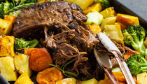
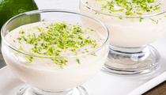
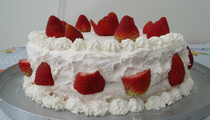
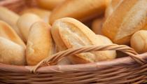
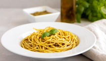

A torta de frango de liquidificador
é a representação perfeita de uma receita
prática, deliciosa e que conquista pelo
sabor. Com a facilidade proporcionada
pelo liquidificador, esta torta se torna
uma opção rápida e irresistível para q
ualquer refeição

Carne Assada
A carne assada na panela de pressão é uma receita prática, suculenta e cheia de sabor. A panela de pressão acelera o cozimento e o resultado é perfeito para um almoço ou jantar especial. Esse prato vai encantar a todos com seu sabor incrível e facilidade de preparo.

Mousse de Limão
O mousse de limão é uma sobremesa clássica que combina perfeitamente o sabor cítrico do limão com a suavidade e a leveza de uma textura aerada. Esta receita é uma verdadeira explosão de frescor e prazer para o paladar.

Bolo de Morango
Esse bolo de morango é uma delícia e vai agradar a todos na sua comemoração!

Pão Francês
O pão francês é um clássico do café da manhã brasileiro: crocante por fora, macio e leve por dentro. Perfeito para acompanhar manteiga derretida, recheios salgados ou até mesmo doces, ele combina simplicidade e sabor em qualquer momento do dia.

Macarrão Alho e Óleo
Macarrão alho e óleo simples, rápido e cheio de sabor, com aquele toque caseiro que conquista em qualquer refeição.